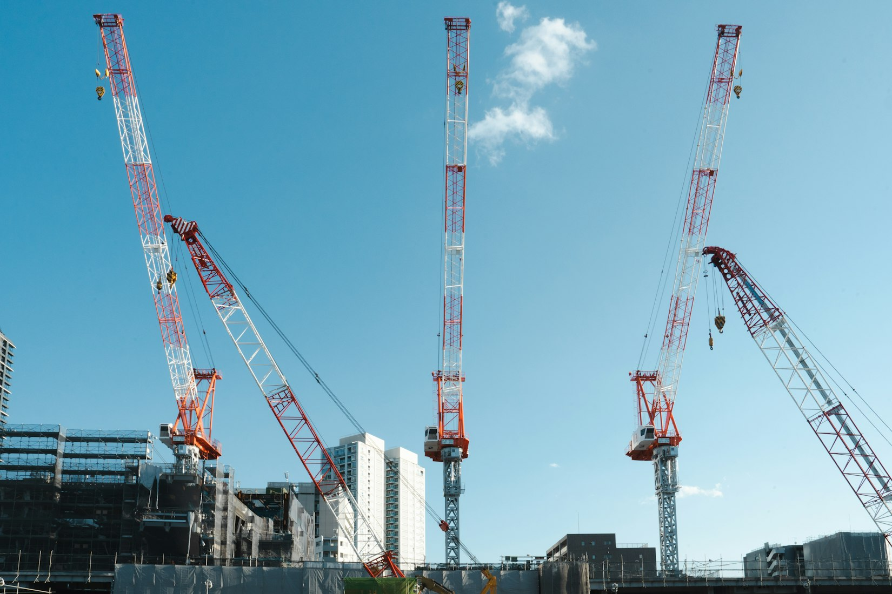
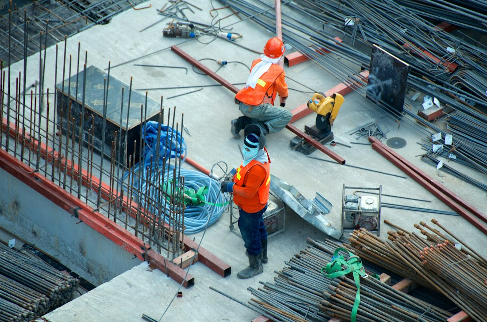
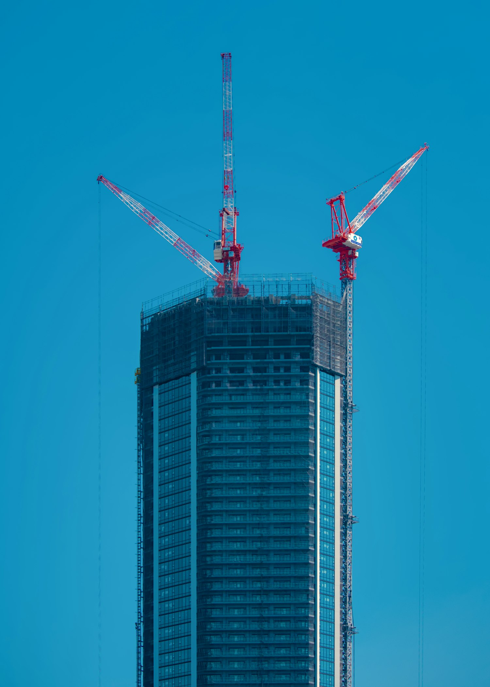
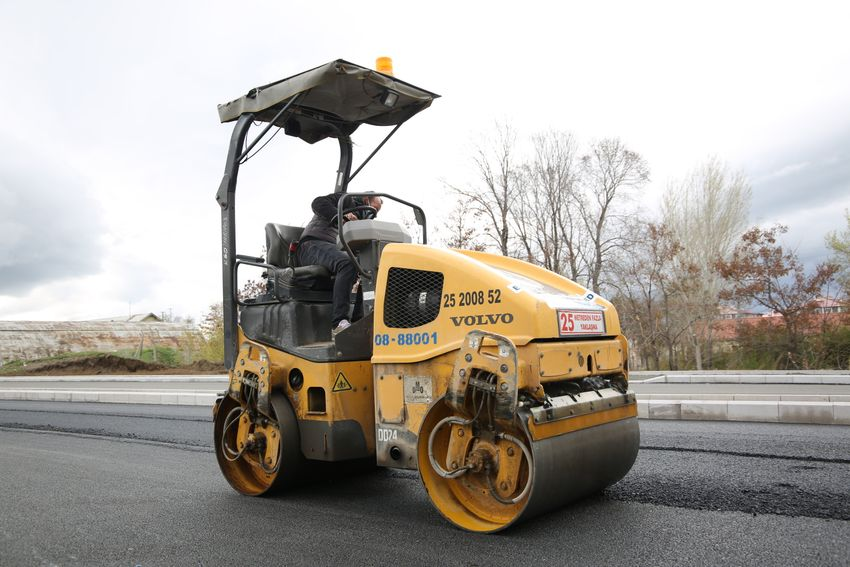
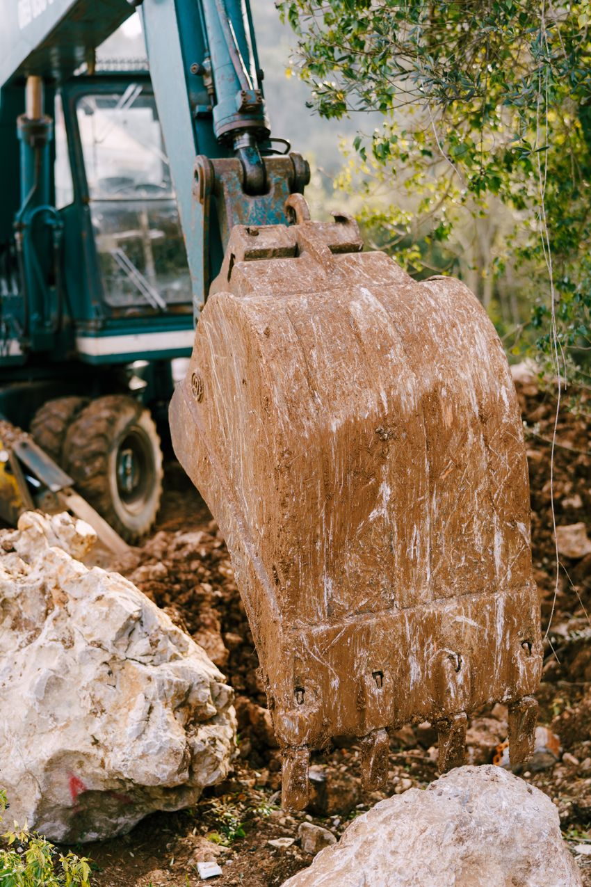

創業
1988年

道路、造成、公共施設。地域で暮らし続けるための工事を担います。
1988年
31名
18名
4分野
土木・建築・舗装・造成。数値はサンプルです。

道路・水路・橋の整備。

公共施設や事業所の新築・改修。

生活道路や構内の舗装。

事業用地の地盤づくり。
土木 ／ 2025年 ／ 〇〇市 ／ 発注者 自治体
建築 ／ 2024年 ／ 〇〇市 ／ 発注者 自治体
舗装 ／ 2025年 ／ 〇〇市 ／ 発注者 自治体
造成 ／ 2026年 ／ 〇〇市 ／ 発注者 民間企業
舗装 ／ 2026年 ／ 〇〇市 ／ 発注者 民間企業
当日の作業と重機の動線を現場全体で確認します。
作業ごとに危険箇所と対策を図面に落とします。
実務経験に応じて講習や受験を支援します。
現場の先輩と朝の段取りを確認するところから覚えました。個人の感想です。
機械に乗る前に、まず周囲の人の位置を見ます。個人の感想です。
| 募集職種 | 条件（架空） |
|---|---|
| 施工管理 | 正社員／月給〇〇万円〜 |
| 現場作業員 | 正社員／月給〇〇万円〜 |
〇〇市 〇〇町（架空）
000-0000-0000（架空）
建設業許可 〇〇県知事許可（般-〇）第〇〇〇〇号（サンプルのため架空です）